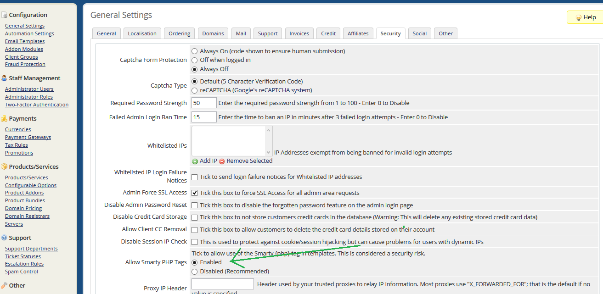
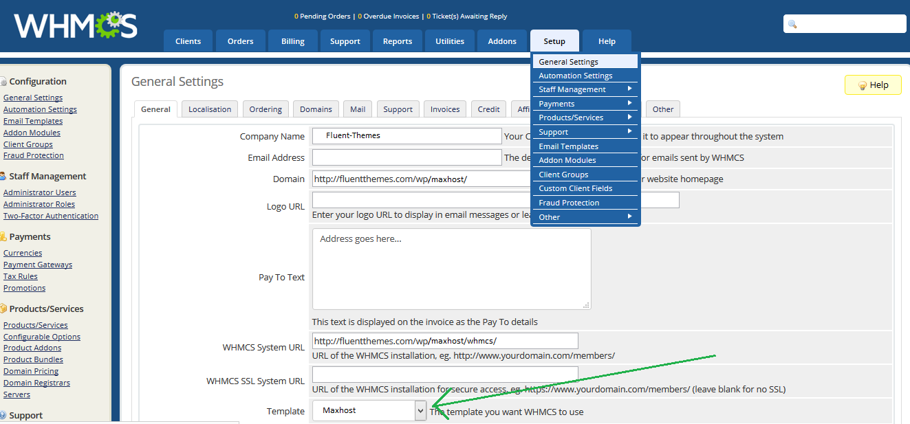
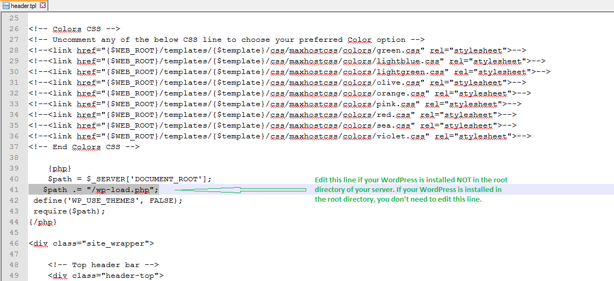
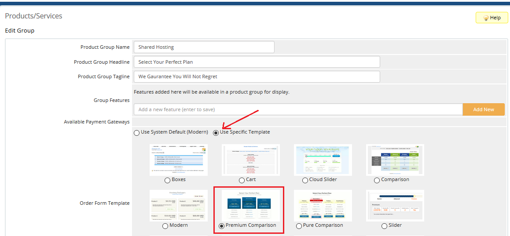
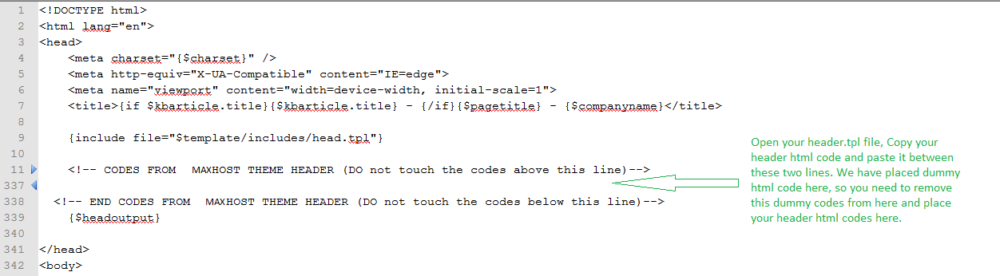
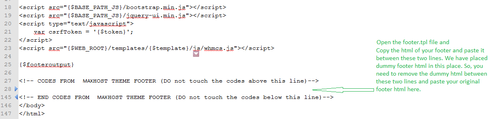
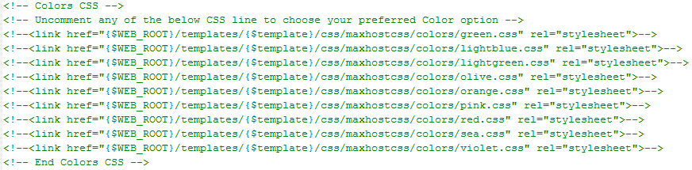
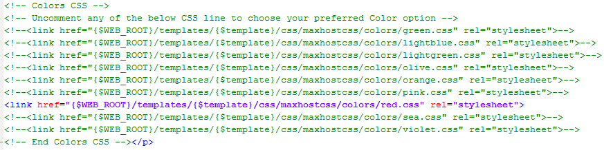

WHMCS Template for Maxhost
Steps for WHMCS Maxhost Template Setup
There are two ways to setup WHMCS Maxhost Template:
- Upload maxhost template [Or maxhost-v7 template for whmcs version 7 or later] (This template does not work on some servers).
- Upload maxhost-alt template [Or maxhost-alt-v7 template for whmcs version 7 or later] (This template works on every servers).
## Upload Maxhost Template
After purchasing license from WHMCS you need to install WHMCS to your server. After that Upload Maxhost folder into the /templates folder of your WHMCS.
Enable PHP tags
Enable Smarty PHP Tags from WHMCS Admin Panel Setup/General Settings/Security tab.

Activate Template
Activate Maxhost Template from WHMCS Admin Panel Setup/General Settings/General tab.

Edit header.tpl File
If your WordPress is installed into the root directory (/home/username/public_html/) of your server, you do not need to edit the header.tpl file. But if
your WordPress is installed in any other folder than root directory, then you need to edit one line from header.tpl file of Maxhost
template. Open header.tpl file in code editor such as notepad++ and edit the 41st line of the file.
In the 41st line you can see the default line is:
$path .= "/wp-load.php";
That default line is written assuming that your WordPress is installed in the root directory (/home/username/public_html/). If not, then the line should be edited like below:
For example your WordPress is installed into /home/username/public_html/wp/maxhost/ folder. In this case the 41st line should be:
$path .= "wp/maxhost/wp-load.php";

Choose Correct Order Form
Maxhost template for WHMCS is built for using the 'Standard Cart' Order Form template. So, you need to make sure that you have login to
your whmcs admin panel and then go to Setup --> General Settings --> Ordering tab and choose 'Standard Cart' as your default order form template.
Also, please use the given 'standard_cart' (it is placed under 'orderforms' folder) folder instead of the default one.

Premium Comparison Template for Products/Services
Go to Setup --> Products/Services --> Products/Services tab to Create new products or services. Once created you will get the option to choose your template for your products/services. To get the look like our live preview, just choose 'Use Specific Template' and then choose 'Premium Comparison' as your Products/Services Form template.

Notes
- If you disregard any of the above steps, the template will not work and you may see a blank white page.
- If you are pretty sure that you have followed every instructions perfectly and still see a blank white page, it means
your server does not allow smarty php tags, that is why it will not work in your server. Please use Maxhost-alt template [Or maxhost-alt-v7 template for whmcs version 7 or later],
since Maxhost-alt template does not need smarty php tags and it works with every server.
Below we have described how to setup Maxhost-alt template [Or maxhost-alt-v7 template for whmcs version 7 or later].
## Upload maxhost-alt [Or maxhost-alt-v7 template for whmcs version 7 or later] Template (If maxhost template [Or maxhost-v7 template for whmcs version 7 or later] did not work for you)
After purchasing license from WHMCS you need to install WHMCS to your server. After that Upload Maxhost-alt folder into the /templates folder of your WHMCS.
Activate Template
Activate Maxhost-alt Template from WHMCS Admin Panel Setup/General Settings/General tab. Now you can see at the front-end the template is ready with dummy header and footer content.
Edit Header and Footer Content of the template
Header
1. First of all make sure your main website's header customization including menu creations are done.
2. Once you are satisfied then open your main website in a browser and press ctrl+u. You will see a new tab is opened with the html of your site.
3. Start copying html lines from where it says 'COPY START FROM THIS LINE TO PLACE THIS INTO THE HEADER.TPL OF WHMCS Maxhost-alt TEMPLATE'
and Stop copying when it says COPY END TILL THIS LINE TO PLACE THIS INTO THE HEADER.TPL OF WHMCS Maxhost-alt TEMPLATE.
4. Now paste the copied html into the header.tpl file of Maxhost-alt template [Or maxhost-alt-v7 template for whmcs version 7 or later]. (header.tpl file is located in Maxhost-alt folder). In the header.tpl file
you will see a line says 'CODES FROM MaxHOST THEME HEADER GOES BELOW (DO not touch the codes above this line)' and another line says 'END CODES FROM MaxHOST THEME HEADER (DO not touch the codes below this line)'. You should
remove all the codes between these two lines and paste your copied html here.

Footer
1. First of all make sure your main website's footer customization are done.
2. Once you are satisfied then open your main website in a browser and press ctrl+u. You will see a new tab is opened with the html of your site.
3. Start copying html lines from where it says 'COPY START FROM THIS LINE TO PLACE THIS INTO THE FOOTER.TPL OF WHMCS Maxhost-alt TEMPLATE' and Stop when it says
'COPY END TILL THIS LINE TO PLACE THIS INTO THE FOOTER.TPL OF WHMCS Maxhost-alt TEMPLATE'.
4. Now paste the copied html into the footer.tpl file of Maxhost-alt template [Or maxhost-alt-v7 template for whmcs version 7 or later]. (footer.tpl file is located in Maxhost-alt folder). In the footer.tpl file
you will see a line says 'CODES FROM MaxHOST THEME FOOTER GOES BELOW (DO not touch the codes above this line)' and another line says 'CODES FROM MaxHOST THEME FOOTER GOES ABOVE (DO not touch the codes below this line)'.
You should remove all the codes between these two lines and paste your copied html here.

Choose Correct Order Form
Maxhost template for WHMCS is built for using the 'Modern' Order Form template. So, you need to make sure that you have login to your whmcs admin panel and then go to Setup --> General Settings --> Ordering tab and choose 'Modern' as your default order form template.
Premium Comparison Template for Products/Services
Go to Setup --> Products/Services --> Products/Services tab to Create new products or services. Once created you will get the option to choose your template for your products/services. To get the look like our live preview, just choose 'Use Specific Template' and then choose 'Premium Comparison' as your Products/Services Form template.
FAQs
Q: My whmcs template color is not changed, default green colour scheme remains. Whow to fix?
A: To change the color of whmcs template, please open header.tpl file and find the following section of codes between around 20 to 40 no. lines:

From the above code uncomment any of the color css line which you want to use. For example if you want to use the red color, the above section of code should be like this:

Q: My whmcs template logo is not changed, default maxhost logo remains. Whow to fix?
A: To replace the maxhost logo with your logo, please open maxhost-alt/css/custom.css file and put the following css code at the bottom of that file:
.navbar-brand.logo {
background: url(YOUR-LOGO-URL-HERE) no-repeat left 21px !important;
}
Note: Replace 'YOUR-LOGO-URL-HERE' with your original logo url.
For example, if your logo url is: https://www.yourdomain.com/wp-content/uploads/2017/01/Logo-1-2.png
then the css code will be:
.navbar-brand.logo {
background: url(https://www.yourdomain.com/wp-content/uploads/2017/01/Logo-1-2.png) no-repeat left 21px !important;
}
Q: My whmcs template favicon is not changed, default maxhost favicon remains. Whow to fix?
A: To replace maxhost favicon with your own favicon, please go to your whmcs template's css/image folder and find this file: favicon-16x16.png. Delete this png file and upload your favicon png image in the folder and rename it exactly as 'favicon-16x16.png'.
Support
As we mentioned in Maxhost Theme Details page of ThemeForest, we do NOT give support for any WHMCS issues. WHMCS is not related to WordPress. You will be able to install WHMCS once you purchase WHMCS License from whmcs.com, and you should get support for your WHMCS from WHMCS support team once you got the WHMCS License.